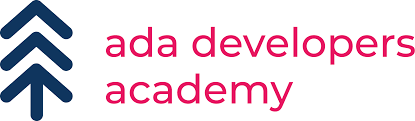

Education
Education
Home
Biography
Fun facts
Adrian Prado
Adrian graduated from Georgetown University with a degree in Computer Science and a minor in Theater and has spent the last seven years teaching high school computer science and cybersecurity in Texas. He’s super excited to join Ada and help guide students toward their goals. In his free time, you can catch Adrian exploring the outdoors or on stage at one of Austin’s improv theaters. He’s also an avid baker and is always taking suggestions for new recipes to make!
Ansel Rognile
Ansel brings over a decade of industry experience ranging from bioinformatics to system- integrated application development, having built and maintained large-scale data analysis platforms focusing on rapid response to stakeholder needs. His goal is to provide the tools, support, and encouragement for each student to achieve their own personal success and instill in them the confidence to challenge the preconceptions of what others think they can achieve.
Ashley Yang
Ashley graduated from Reed College before teaching kindergarten for a few years and eventually went on to complete an immersive coding program at Dev Bootcamp. Before joining Ada, she worked as a backend developer. She’s thrilled to be combining her passion for education with her technical skills at the Digital campus.
Kelsey Steven
Kelsey graduated from UW Bothell and has a long career as a mobile software engineer. After years of great experiences as an internship and industry mentor, they wanted to work with Ada students to be what they do, rather than a small slice of their job. Outside of tech, they are a fan of all kinds of crafting and cosplay!

Mikelle Wade
Hailing from Atlanta, Mikelle is a non-binary black programmer with love for mathematics and music. After taking a number of courses at George Washington, they realized coding was a passion for them. This newfound interest served as fuel for their programming journey. Gaining experience in machine learning, engineering computation, consulting, and more along the way, Mikelle now looks to help women and gender-expansive folks break into the field!